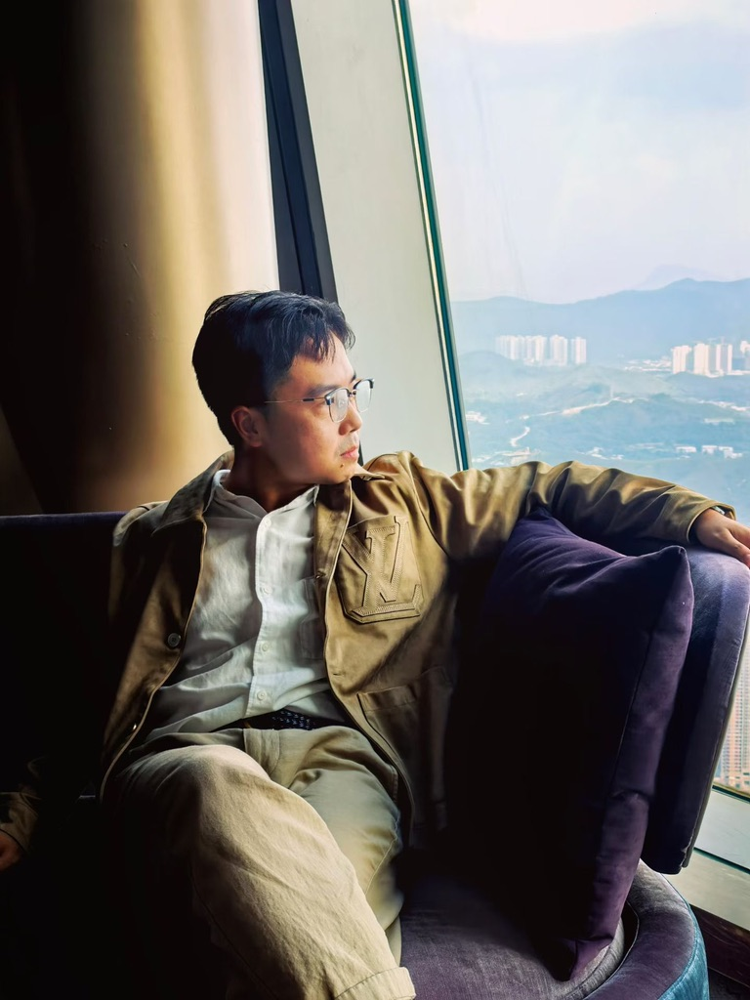
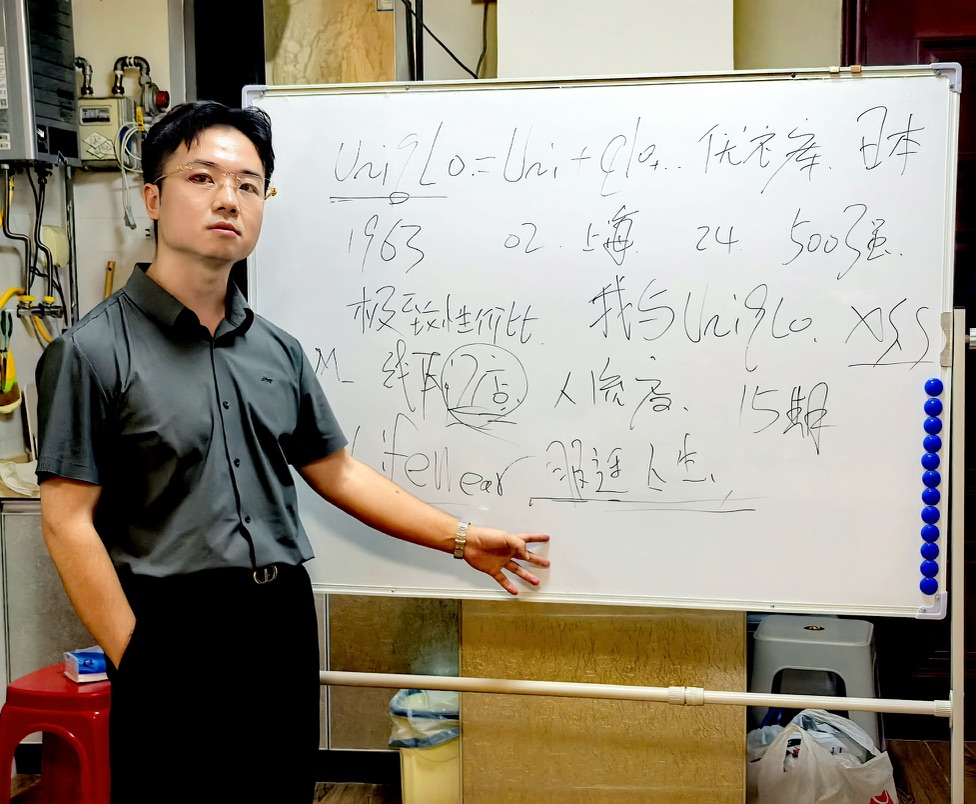
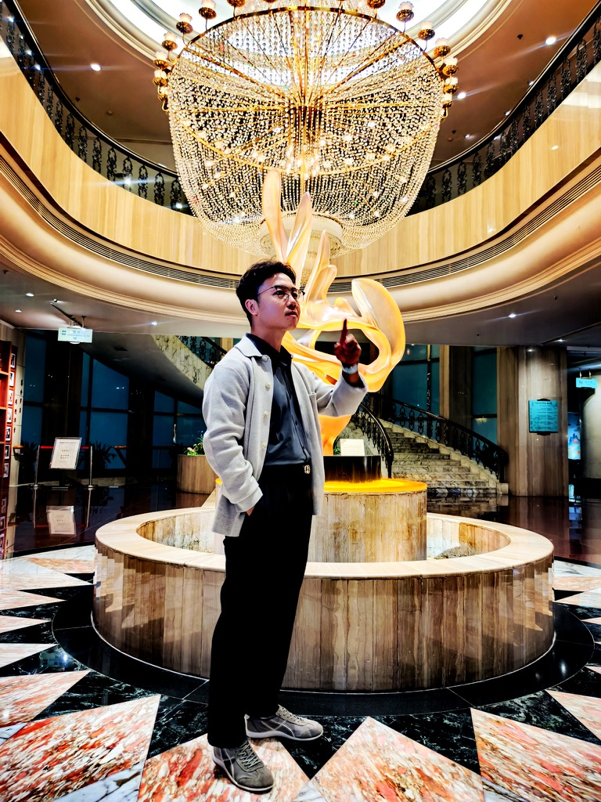
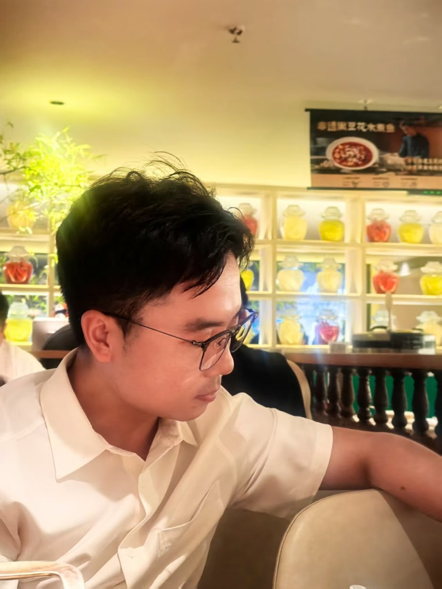
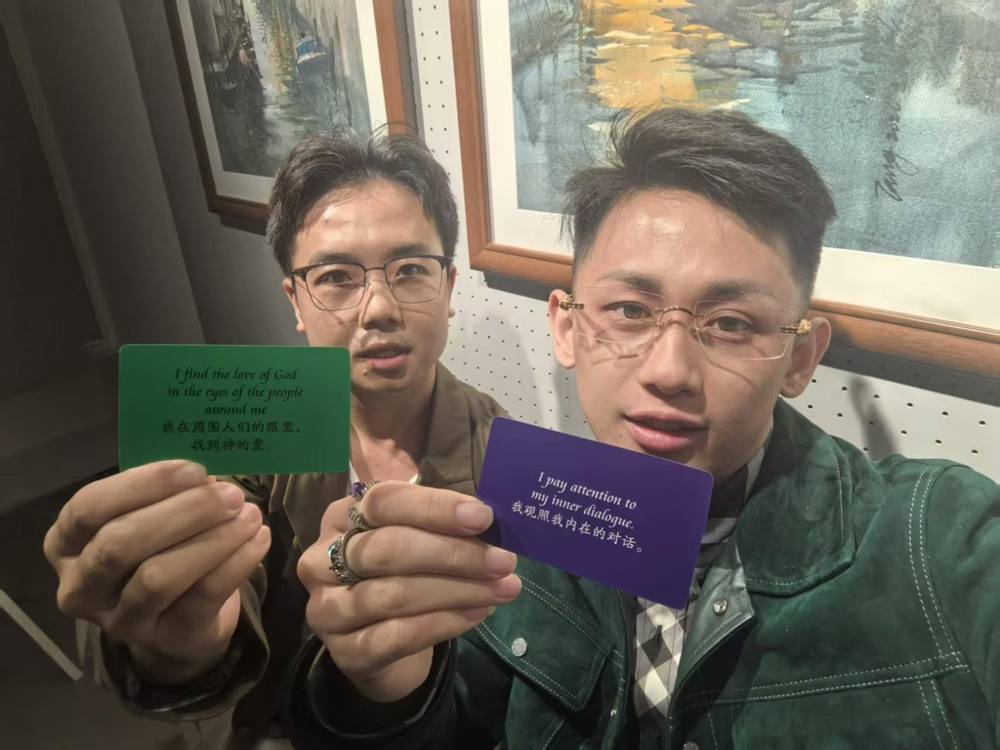

我想成为更好的自己。
计算机 · IT PM · 文化创业 · 阅读 · 运动 · 写作 · 公众号「i雅俗共赏」
Works
微信读书网页版的阅读增强浏览器插件：屏占比、自动阅读、笔记增强、阅读统计与阅读洞察。已上架 Microsoft Edge 加载项商店。
俗到极致即为雅，雅得过头便是俗——是谓雅俗共赏。在这里记录生活与思考，点开即可直接阅读文章。
Writing
全部文章 →
About My Life



